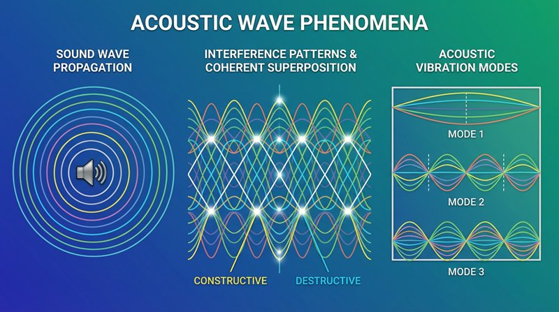

返回课程列表
第五课
能量方法
声能的产生、传播与转换效率
⏱️ 约40分钟
从演奏者的肌肉能量到听众耳中的声能，经历了多次能量转换。理解这个过程有助于优化乐器设计和音响系统。
乐器的能量转换链
演奏者的动能→弦/膜/空气柱的振动能→共鸣箱放大→声波辐射。每一步都有能量损耗，乐器设计的目标就是提高整体转换效率。

不同乐器的能量效率
乐器能量转换的比较：
- 小提琴：弓的动能→弦振动→面板振动→声辐射，效率约1-2%
- 吉他：手指动能→弦振动→共鸣箱放大，原声吉他声功率约0.05W
- 钢琴：琴锤动能→弦振动→音板辐射，三角钢琴效率高于立式
- 电吉他：弦振动→电磁感应→电信号→扬声器，可放大到数百瓦
音响系统的能量管理
现代音响系统将电能转换为声能。扬声器效率通常只有1-5%，大部分电能转化为热能。音响工程需要精确的能量管理。
音响工程中的能量优化
音响系统的能量考量：
- 扬声器效率：典型家用音箱效率约1%，号角音箱可达10%以上
- 功放匹配：功放功率应略大于音箱额定功率，避免削波失真
- 房间声学：吸音材料控制混响时间，反射板优化声能分布
- 监听位置：等边三角形摆位确保左右声道能量均衡